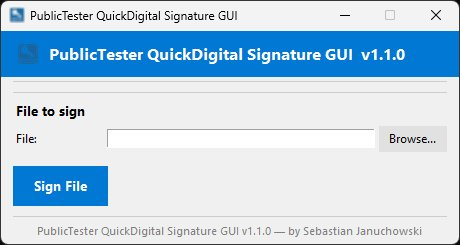

Graficzny interfejs do signtool.exe dla Windows. Auto-wykrywanie certyfikatów, asynchroniczne podpisywanie i znacznik czasu RFC 3161 — wszystko w jednym oknie.

Rysunek 1. Główne okno aplikacji — tryb minimalny (MINIMAL_GUI = True)
Każdy aspekt podpisywania zaprojektowano minimalizując obszar ataku i ekspozycję wrażliwych danych.
Pobierz v1.1.0 lub uruchom z kodu źródłowego. MIT License · open source · Windows 10/11.